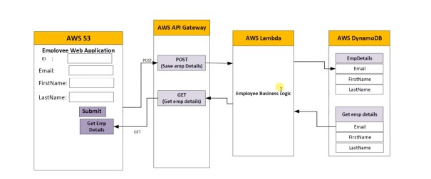

AWS
This is a complete end-to-end serverless web application in AWS cloud using API gateway, Lambda function, DynamoDB and S3. API Gateway provides tools for creating and documenting web APIs that route HTTP requests to Lambda functions. You can secure access to your API with authentication and authorization controls. AWS Lambda is a serverless compute service that runs your code in response to events and automatically manages the underlying compute resources. These events may include changes in state or an update, such as a user placing an item in a shopping cart on an ecommerce website. Amazon DynamoDB is a fully managed NoSQL database service that provides fast and predictable performance with seamless scalability. You can use Amazon DynamoDB to create a database table that can store and retrieve any amount of data, and serve any level of request traffic.
Work Flow
